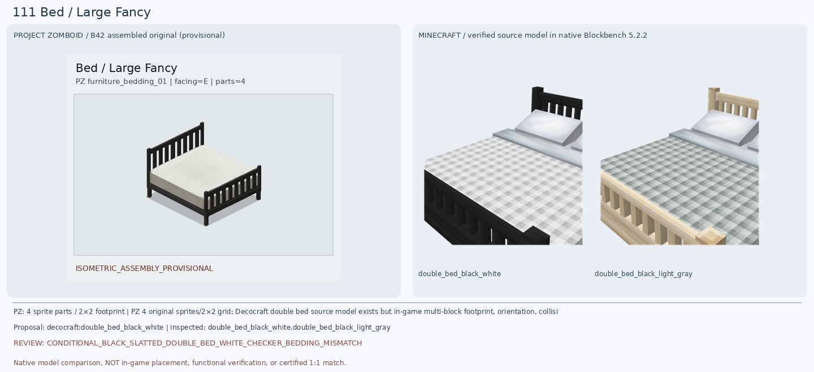
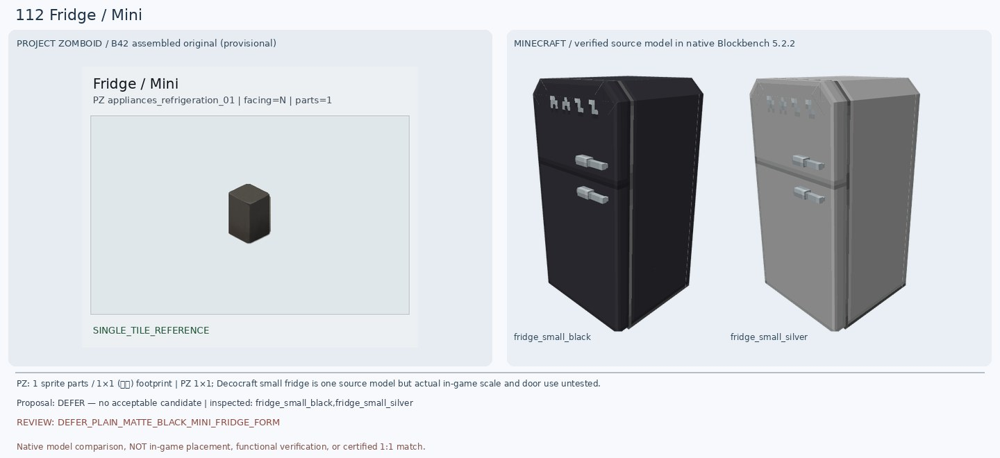
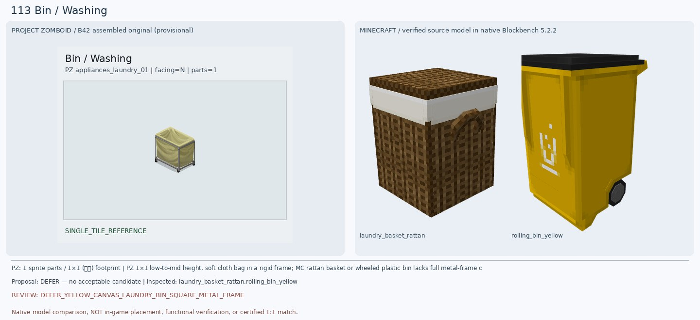
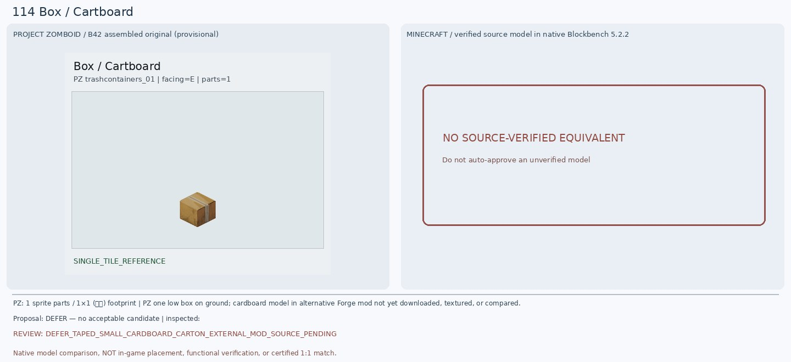
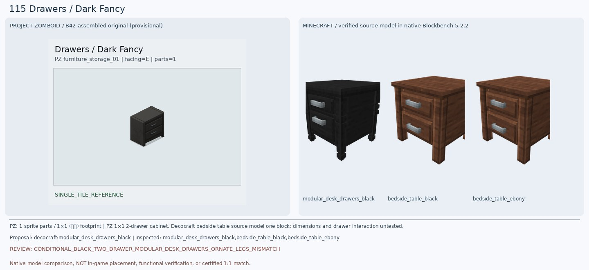
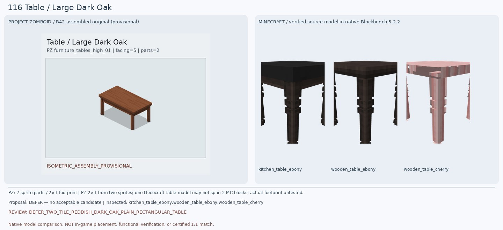
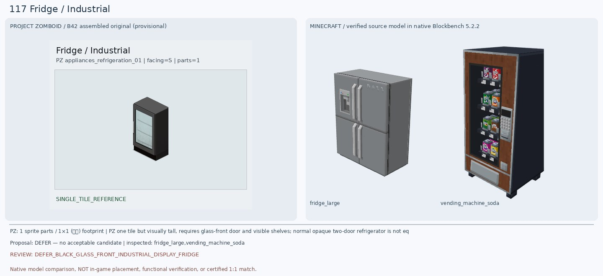
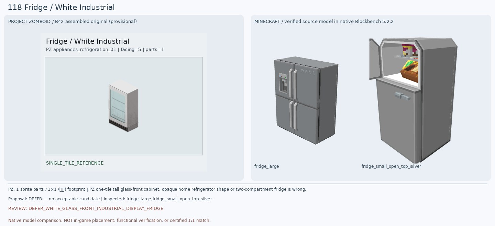
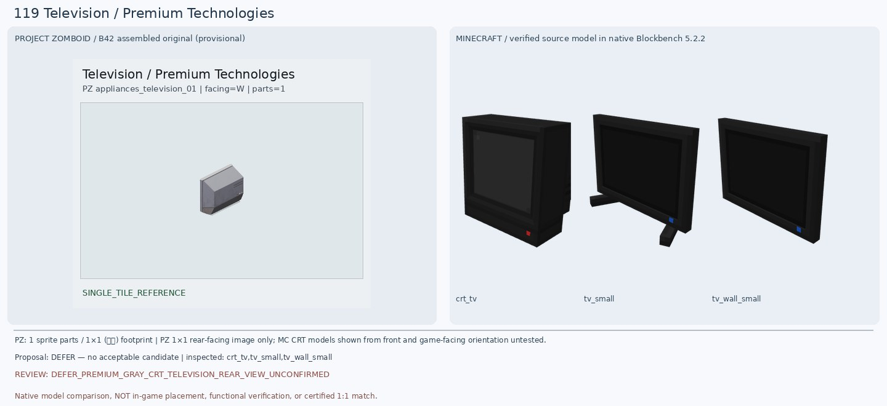
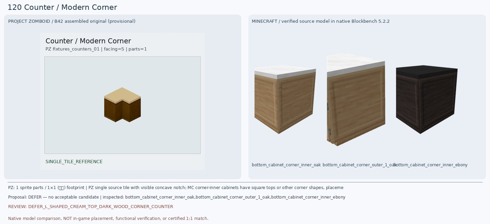

Rosewood batch12 111-120
111 Bed / Large Fancy
CONDITIONAL_BLACK_SLATTED_DOUBLE_BED_WHITE_CHECKER_BEDDING_MISMATCH — decocraft:double_bed_black_white
원본 PZ는 검정 세로살 머리판·발판과 흰색 단색 매트리스가 핵심이다. 기존 Birch Black은 밝은 원목 프레임에 검정 체크 침구라 색 배합이 반대다. Decocraft Double Bed Black White는 검정 프레임과 흰 침구라는 방향은 맞지만 회백색 체크무늬와 커다란 흰 베개/접힌 이불이 두드러져 원본의 평평한 단색 침구와 다르다. 2×2 설치·수면 기능은 인증하지 않는다.

112 Fridge / Mini
DEFER_PLAIN_MATTE_BLACK_MINI_FRIDGE_FORM — 보류
PZ 원본은 손잡이와 도어 분할선이 거의 보이지 않는 검정 무광 직육면체 미니 냉장고다. 기존 Refurbished Dark Fridge는 부분 모델 가져오기에서 분홍 측면/검정 전면으로 잘못 보였다. 이번 Decocraft Fridge Small Black 원본 293큐브를 Blockbench 5.2.2로 직접 렌더하니 위아래 2개 문, 은색 손잡이 2개, 상단 통풍구가 있는 높고 큰 가정용 냉장고였다. PZ의 짧고 단순한 검정 미니 냉장고와 문 수·높이·외관이 달라 보류한다.

113 Bin / Washing
DEFER_YELLOW_CANVAS_LAUNDRY_BIN_SQUARE_METAL_FRAME — 보류
PZ 원본은 노란 천 자루를 회색 금속 사각 프레임에 걸어 둔 세탁물 수거함이다. 이번 Decocraft Laundry Basket Rattan의 실제 20큐브 렌더는 갈색 등나무 뚜껑이 달린 사각 바구니로 천과 금속 프레임이 없다. Rolling Bin Yellow의 실제 41큐브 렌더는 검정 뚜껑·바퀴 달린 노란 플라스틱 쓰레기통이다. 둘 다 원본의 구조/소재가 달라 보류한다.

114 Box / Cartboard
DEFER_TAPED_SMALL_CARDBOARD_CARTON_EXTERNAL_MOD_SOURCE_PENDING — 보류
원본은 위쪽을 갈색 테이프로 봉한 작은 종이 골판지 택배 상자다. 기존 Refurbished Acacia Mail Box는 길고 높은 우편함이라 전혀 맞지 않는다. 기존 5개 모드의 실제 등록 블록에서는 같은 카드보드 상자를 찾지 못했다. 공식 Forge 1.20.1을 지원하는 CardboardBox 및 Cardboard Boxes 모드를 추가 발견했지만 해당 JAR의 3D 모델을 아직 렌더링하지 않아 후보 확정은 보류한다.

115 Drawers / Dark Fancy
CONDITIONAL_BLACK_TWO_DRAWER_MODULAR_DESK_DRAWERS_ORNATE_LEGS_MISMATCH — decocraft:modular_desk_drawers_black
PZ 원본은 검정 무광 단순 2단 서랍장으로 위아래 서랍에 짧은 은색 가로 손잡이가 하나씩 달린다. 기존 Macaw Acacia Bookshelf Drawer는 선반의 초록 판만 표시되어 반려한다. 이번 Decocraft Modular Desk Drawers Black의 실제 50큐브 Blockbench 모델은 검정 목재, 서랍 2개, 은색 손잡이 2개가 확인되어 구조·색상에서 가장 가깝다. 하지만 다리 네 개가 길고 장식이 많으며 상판이 두껍고 원본보다 높은 듯해 조건부다. Bedside Table Black은 ID와 달리 렌더에서 갈색 목재로 보여 선택 텍스처/원본 모델 표현을 추가 검증해야 한다.

116 Table / Large Dark Oak
DEFER_TWO_TILE_REDDISH_DARK_OAK_PLAIN_RECTANGULAR_TABLE — 보류
PZ 원본은 적갈색 단순 2×1 긴 사각 테이블로 얇은 평평한 상판과 직선 다리 네 개를 가진다. 기존 Macaw Dark Oak Glass Table은 유리 상판 한 장만 표시돼 반려한다. 이번 Decocraft Wooden Table Ebony 25큐브는 정사각형에 가까운 매우 짙은 갈색 상판과 두꺼운 장식 다리, Kitchen Table Ebony 29큐브는 검정 상판과 두꺼운 장식 다리, Wooden Table Cherry는 분홍색 상판과 장식 다리로 각각 원본의 긴 직사각형·적갈색·곧은 다리 구조와 다르다. 멀티타일 2×1 설치 여부도 미검증이므로 보류한다.

117 Fridge / Industrial
DEFER_BLACK_GLASS_FRONT_INDUSTRIAL_DISPLAY_FRIDGE — 보류
PZ 원본은 검은 산업용 냉장 진열장으로 전면의 큰 투명 유리문과 내부 가로 선반, 세로 손잡이가 핵심이다. Decocraft Fridge Large 실제 372큐브 모델은 은색 4문 불투명 가정용 냉장고이고, 문을 활짝 연 Fridge Large Open Full에서만 내부 선반이 보인다. Vending Machine Soda 200큐브 모델은 음료 진열창과 선반이 있지만 우드색 전면·동전/버튼 패널을 가진 자동판매기로 냉장고와 다르다. 검정 유리문 진열장과 일치하지 않아 보류한다.

118 Fridge / White Industrial
DEFER_WHITE_GLASS_FRONT_INDUSTRIAL_DISPLAY_FRIDGE — 보류
PZ 원본은 117번과 같은 산업용 유리문 냉장 진열장이지만 흰색/연회색 외장, 청록빛 투명 문과 내부 선반, 검정 받침대를 가진다. 기존 Paladin White Fridge는 불투명 문과 통풍 그릴이 있어 부적합. 이번 Decocraft Fridge Large 372큐브는 은색 불투명 4문이고 Fridge Small Silver 293큐브는 은색 2문 가정용 모델이며 Open Top Silver는 문을 열어 놓은 변형일 뿐 닫힌 투명 유리문이 아니다. 모두 보류한다.

119 Television / Premium Technologies
DEFER_PREMIUM_GRAY_CRT_TELEVISION_REAR_VIEW_UNCONFIRMED — 보류
PZ 원본은 Facing W의 뒷면/측면이 보이는 회색 쐐기형 CRT TV로 후면 가로 통풍구와 주황 표시등이 관찰된다. 기존 Refurbished Television은 정육면체 전면 검정 패널로 윤곽이 다르다. 이번 Decocraft CRT TV 실제 12큐브 모델은 검정 정육면체에 가까운 화면 상자로 회색 사다리꼴 후면과 다르며, TV Small/Wall Small은 평면형 모니터라 두께와 형태가 더욱 다르다. 같은 방향에서 후면을 비교한 인게임 회전 검증도 없으므로 보류한다.

120 Counter / Modern Corner
DEFER_L_SHAPED_CREAM_TOP_DARK_WOOD_CORNER_COUNTER — 보류
PZ 원본은 베이지색 L자 상판의 안쪽 모서리가 파여 있고 아래는 진한 황갈색 목재 판넬로 이어지는 1칸 코너 카운터다. 기존 Decocraft Diner Corner Black은 검정·은색 띠와 대각 챔퍼로 부적합. 이번 Decocraft Bottom Cabinet Corner Inner Oak 9큐브는 흰 정사각형 상판과 밝은 갈색 큐브 몸체, Inner Ebony는 검정 상판과 거의 검정 몸체로 나타났다. Outer 1 Oak 23큐브는 부분 삼각형 상판 조각일 뿐 1×1 오목 L자 전체가 아니다. 어느 것도 원본의 베이지 L자 홈과 진한 목재색을 동시에 갖추지 않아 보류한다.